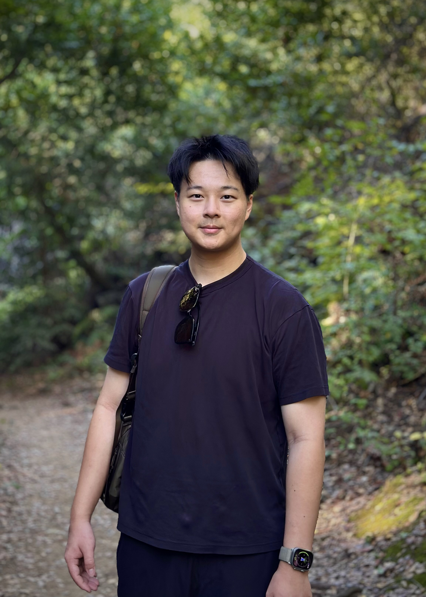
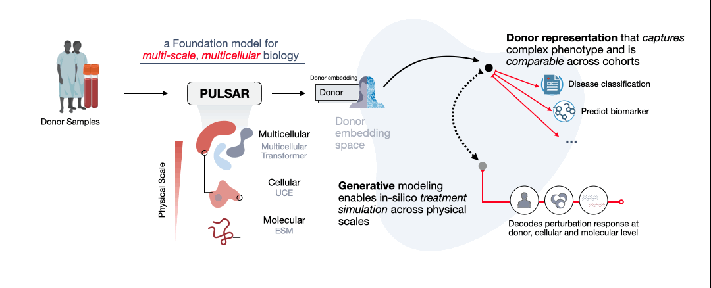

Kuan Pang
I'm a Computer Science Ph.D. student at Stanford, advised by Prof. Jure Leskovec. My research is supported by the Stanford Bio-X fellowship.
I'm excited about machine-learning models that computationally reason about biology across physical scales, and guiding data collection for training frontier models in biology.
Previously, I completed my B.S. in Computer Science, Bioinformatics & Computational Biology, and Statistics at the University of Toronto, where I worked at the Vector Institute with Prof. Bo Wang.

Publications
* / ** equal contribution · † corresponding author
